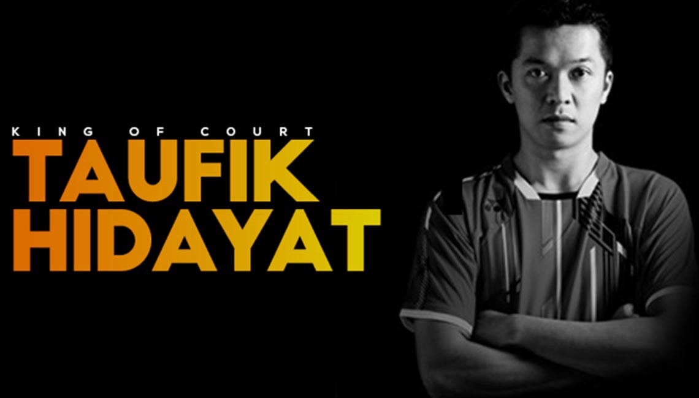

<!DOCTYPE html>
<html lang="en"></html>
<head>
    <meta charset="UTF-8">
    <meta http-equiv="X-UA-Compatible" content="IE=edge">
    <meta name="viewport" content="width=device-width, initial-scale=1.0">
    <link rel="stylesheet" href="./css/styles.css" />
    <title>Tribute page to Taufik Hidayat</title>
</head>
<body>
    <main id="main">
        <h1 id="title">Taufik Hidayat</h1>
        <p>The Legend of Backhand Smashes</Legend></p>
        <figure id="img-div">
            
        <figcaption id="img-captin">Legend posing himself with arms crossed</figcaption>
        </figure>

        <section id="tribute-info">
            <h3 id="headline"> Here are the achivement of Taufik Hidayat:</h3>

            <ul>
                <li><strong>2000 Sydney Olympics - </strong>Hidayat participated in the men's singles competition at the 2000 Summer Olympics in Sydney. In his first Olympics, he was eliminated in the quarter-finals by Ji Xinpeng of China. </li>
                <li><strong>2004 Athens Olympics - </strong>Hidayat won the men's singles gold medal at the 2004 Summer Olympics defeating Hidetaka Yamada of Japan and Wong Choong Hann of Malaysia in the first two rounds. Hidayat defeated Peter Gade of Denmark 15–12, 15–12 in the quarter final and Boonsak Ponsana of Thailand 15–9, 15–2 in the semifinal. Playing in the gold medal match, He defeated Korean Shon Seung-mo 15–8, 15–7 in the final to win the gold medal.</li>
                <li><strong>2005 World Championship - </strong>In August 2005, he won the men's singles title at the World Championships defeating world number one Lin Dan of China 15–3, 15–7 in the final. With this title, he became the first men's singles player to hold the Olympic and World Championships title in consecutive years. </li>
                <li><strong>2006–2007: Asian and Southeast Asian Games - </strong>Hidayat won the men's singles gold medal at the Asian Games in 2002 Busan and 2006 Doha. He also won the 2007 Asian Championship, and two men's singles gold medals at the Southeast Asian Games in 1999 Bandar Seri Begawan and 2007 Nakhon Ratchasima.</li>
                <li><strong>2008 Beijing Olympics - </strong>Hidayat competed in the 2008 Summer Olympics but he was eliminated in the second round by Wong Choong Hann of Malaysia.</li>
                <li><strong>2012 London Olympics - </strong>For the fourth time, Hidayat participated in the Summer Olympics. Hidayat competed at the 2012 Summer Olympics but he was eliminated in the round of 16 by Lin Dan of China.</li>
            </ul>

            <h3>
                If you have time, you should read more about this incredible player on his
                <a
                  id="tribute-link"
                  href="https://en.wikipedia.org/wiki/Taufik_Hidayat"
                  target="_blank"
                  >Wikipedia entry</a
                >.
              </h3>
        </section>
    </main>
    
</body>
</html>